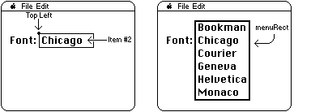

|
|
In order to support popup menus, menu definition procedures (MDEFs) must now
respond to a new message, mPopupMsg. mPopupMsg is message
number 3. When your MDEF is called with this message, it should calculate the
rectangle in which the popup menu should appear.
[Nov 01 1987]
|
Introduction
The interface to an MDEF is:
PROCEDURE MyMDEF(message: Integer; theMenu: MenuHandle; VAR menuRect:
|
For mPopupMsg, the message parameter will be 3 and
theMenu will be a MenuHandle to your menu. The MDEF should
compute a rectangle for the menu such that the item passed in
whichItem will be displayed at hitPt. See the figure below:

The hitPt parameter, though, is NOT a Point. Instead, this
parameter is used to pass the top left of the item, passing the top
coordinate and then the left coordinate. This is the opposite order of
the fields in a Point. The values can be used together as a
LongInt, with left in the high word and top in the
low word, or separately as two Integers.
A more correct Pascal interface to the MDEF (for the mPopupMsg
only) would be:
PROCEDURE MyMDEF(message: Integer; theMenu: MenuHandle; VAR menuRect:
|
|
Note:
The MPW interface files incorrectly list mPopupMsg as 4; it
should be 3.
|
Back to top References
The Menu Manager
Back to top
Downloadables
|

|
Acrobat version of this Note (72K).
|
Download
|
|